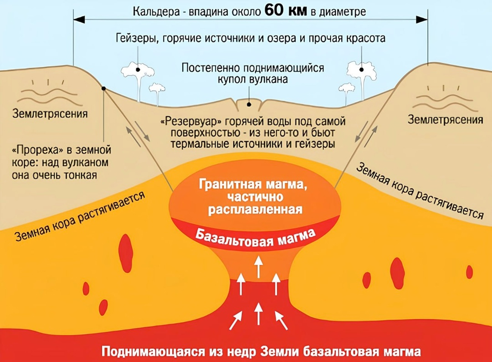

Питание для супервулкана обеспечивает гигантский плюм — вертикальный поток твёрдой мантийной породы, раскалённый до 1600 °C. Ближе к поверхности Земли часть плюма расплавляется в магму, что приводит к образованию гейзеров и грязевых котлов. В разрезе плюм представляет собой 660-километровый столб с боковыми вздутиями, расширяющийся кверху в форме воронки. Два его верхних ответвления находятся непосредственно под территорией национального парка, образуя магматическую камеру (глубина её — 8—16 км ниже поверхности Земли).